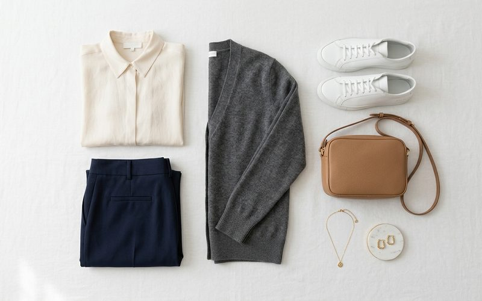

A volta do minimalismo autêntico nos brechós
Reflexões — Brechó Outra VezVivemos uma época de excesso de estímulos, e não seria diferente na moda. Em resposta aos micro-ciclos do fast fashion, o minimalismo tem ressurgido forte — não mais como uma simples estética vazia de cores, mas como uma busca genuína por silhuetas autênticas e atemporais, nas quais o 'menos virou definitivamente mais'. O Brechó Outra Vez tem observado isso diariamente: as clientes da Savassi buscam, mais do que nunca, itens-chave, calças de alfaiataria perfeitas, e blazers que caem feito uma luva.
A diferença do minimalismo 'novo' das fast fashions para o minimalismo de peças de brechó é a essência do caimento. As calças de alfaiataria dos anos 90 ou começo dos 2000 encontradas em brechós de roupa usada geralmente têm forros robustos, cós bem estruturados e pregas que abraçam o corpo feminino de forma muito mais respeitosa e natural que as peças feitas em série de hoje. Esse é o 'minimalismo autêntico', focado no molde impecável e não na economia de tecido.
Para construir um guarda-roupa cápsula com roupas usadas, a estratégia é apostar em tons neutros, que conversem entre si. Preto, off-white, nude, azul marinho e caramelo. Mas não se engane: um bom armário cápsula também suporta texturas ricas. Uma blusa de tricot de seda minimalista, combinada com alfaiataria de lã fina, exala sofisticação e luxo silencioso, algo extremamente procurado no mercado moderno de moda sustentável.

Pense nas suas bolsas e acessórios. Um cinto de couro legítimo vintage e uma bolsa de estruturação clássica não têm prazo de validade. Esses itens muitas vezes funcionam como o verdadeiro ponto âncora do estilo. E, curiosamente, essas peças costumam ter valores incrivelmente altos nas lojas novas. Quando você escolhe um brechó feminino de curadoria, essas âncoras ficam muito mais acessíveis, permitindo que você suba o nível do seu estilo sem estourar o orçamento.
Se você se sente perdida diante do seu guarda-roupa abarrotado, experimente focar no minimalismo. Doe ou consigne no Outra Vez as peças estampadas que você usa raramente e foque em descobrir tesouros atemporais nas nossas araras. O minimalismo da Savassi hoje respira qualidade e elegância contida. Menos roupas, mais qualidade. Menos modismo, mais estilo. Menos impacto, mais sustentabilidade.
Tem peças incríveis para desapegar ou quer renovar o closet?
Agendar visita: (31) 8403-2616